Decreasing Universe: O Efeito ‘Matéria
Escura’
João
Carlos Holland de Barcellos
Abstract:
Após uma breve recordação ao "Decreasing Universe" model, desenvolveremos uma fórmula da velocidade
aparente das estrelas em função do raio relativo ao centro da galáxia e
mostraremos que é a mesma curva de velocidade que está associada à matéria
escura.
PassWords: Dark Matter, Hubble’s Law, Dark Energy, Dark Matter,
Decreasing Universe, Universe Expansion.
1. Introdução
A teoria do Universo Decrescente (U.D.) propõe que o
campo gravitacional contrai continuamente o espaço e todos os objetos dentro
dele. Esse efeito oferece uma explicação alternativa para dois fenômenos
cosmológicos:
- Expansão acelerada aparente das galáxias (sem
invocar energia escura).
- Velocidades orbitais
anômalas de
estrelas (sem exigir matéria escura).
Embora contra-intuitiva, a ideia alinha-se com
efeitos relativísticos conhecidos:
- Princípio da Equivalência: Em um elevador acelerado,
o espaço e os objetos dentro dele se contraem na direção do movimento.
- Métrica de Schwarzschild: Próximo a um corpo massivo, distâncias
radiais são comprimidas.
2. Energia Escura e Expansão do Universo
O modelo U.D. explica a aceleração cósmica aparente como consequência da
contração local do espaço. Como os instrumentos de medição na
Terra também encolhem, galáxias distantes parecem se afastar mais rápido —
mesmo que seu movimento real não mude. Isso reproduz a Lei de Hubble sem
energia escura.
Referências:
- Lei
de Hubble e sua relação com energia/matéria escura.
- Universo
Decrescente: Distância em função do redshift.
3. Matéria Escura e Curvas de Rotação Galáctica
A matéria escura é tradicionalmente usada para explicar por que estrelas
nas bordas das galáxias orbitam mais rápido do que o previsto pela mecânica
newtoniana. O U.D. propõe uma alternativa: contração gravitacional
diferencial dentro das galáxias.
- Próximo ao centro: Maior contração encurta os
comprimentos de onda dos fótons emitidos.
- Regiões externas: Menor contração resulta em
menos compressão.
Essa diferença simula o efeito Doppler, fazendo estrelas distantes parecerem mais
rápidas — sem matéria escura.
4. Testando U.D. vs. ΛCDM
O modelo ΛCDM padrão depende de energia e matéria escura. O U.D. faz uma
previsão testável:
- U.D.: Galáxias mais massivas (na
mesma distância) devem exibir redshifts
menores devido a maior contração.
- ΛCDM: Prevê o oposto (redshift gravitacional aumenta com a massa).
Dados empíricos apoiam o U.D. e contradizem ΛCDM (Ref. 03).
5-O Efeito Materia Escura
A
Matéria Escura é uma hipótese criada para explicar a velocidade anômala de
estrelas e gases em orbita de galáxias.
Esta velocidade parece aumentar à medida que a órbita fica mais distante
do centro da galáxia. Esse aumento aparente da velocidade contraria as leis de
Newton que aponta para velocidades menores para estrelas orbitando mais
afastadas do centro da galáxia.
O
seguinte gráfico ilustra este comportamento:
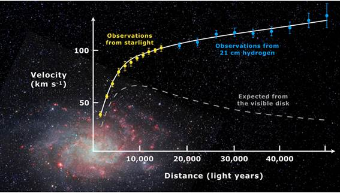
Rotation curve of spiral galaxy Messier 33 [04]
Iremos
explicar esta aparente anomalia como sendo uma espécie de “Ilusão de Ótica” da
contração do espaço provocada pelo campo gravitacional.
Antes
do leitor prosseguir seria interessante que desse uma lida no artigo:
"Derivation of Hubble’s Law and its relation to dark
energy and dark matter" [01]
que
introduz o leitor a este novo paradigma.
Nossa
hipótese central é a de que o campo gravitacional (g) contrai continuamente
o espaço e tudo que está contido nele. E
essa contração depende, portanto da intensidade do campo gravitacional.
Do
nosso artigo original [01] copiamos nossa primeira fórmula :
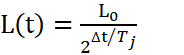
(Formula of
space contraction from the point of view of an “SO”)
Where:
L (t) = Measure of L0 (decreasing) by a "Sidereal
Observer".
t0 = Initial time (arbitrary)
L0 = Length measured in t=t0
Tj = Jocaxian
Time
∆t = t – t0
Para
simplificar, podemos definir:

Jocaxian’s Factor
We can
also rewrite the same Jocaxian Factor (Fj)
in a more friendly way: 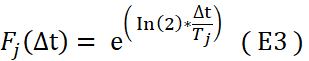
We can
rewrite (E1): 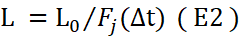
Esta
fórmula computa a contração das distâncias (e medidas) em nosso planeta, que está imerso em um certo campo gravitacional gt, relativamente
a um observador externo, que não sofre influência do campo gravitacional (ou
que tal influência seja desprezível).
Precisaremos
alterá-la para que possa refletir a
contração em outros campos gravitacionais(g) diferentes da via-láctea
(gt), pois devemos lembrar que o
comprimento de onda, como tudo que está dentro das galáxias, também sofre
contração (Por esta razão a temperatura das galáxias estão aumentando[05]).
2.1-Considerações importantes que devemos sempre ter em
mente
Estas
ideias são novas e por isso é fácil confundir os conceitos e ficarmos realmente
confusos com tantas mudanças. Por esta razão é importante notar duas coisas
fundamentais:
- O
nosso espaço está se contraindo, nossas réguas e padrões de medidas se contraem
também, assim, para um observador que não sofre contração, nossa medida
torna-se menor. A medida vista de um observador externo (L) da nossa medida
inicial (L0) é dada pela formula [XX] acima:
L = L0
/ Fj(T) [XXA]
O comprimento diminui para um observador que
não sofre contração
-Agora
quem está na Terra ocorre o OPOSTO: Um observador terrestre (nós) perceberá as
coisas que não sofrem contração, estarem aumentando, uma vez que sua própia réqua de medida (nossa)
está diminuindo!
D = D0
* Fj(T) [XXB]
A medida externa para um observador que sofre contração
2.1-Uma nova Hipótese
Desta forma , observando a nossa fórmula original E1 vinda do
artigo original [01], podemos pensar que se , em outra
galáxia, o campo gravitacional (g) for igual ao da Via-Láctea (na Terra) , a fórmula (E1) permanece a mesma e o tempo de contração
não se alterará.
Por
outro lado, se o campo gravitacional, por exemplo, dobrar em relação ao campo gravitacional da via-láctea,
o tempo de contração cairá a metade.
Analogamente, se o campo gravitacional cair a metade,
em relação ao nosso, o tempo de contração dobrará.
Por
isso vamos incluir uma nova hipótese:
O tempo
de contração é inversamente proporcional à intensidade do campo gravitacional.
Se <g>
é a intensidade do campo gravitacional na região do espaço que sofre contração,
e <gt> é o campo gravitacional na
Terra, para refletir esta nova hipótese, devemos dividir <∆t> por <g/gt>. Isso é equivalente a tomar o Tempo Jocaxiano como uma função de g: Tj
è Tj(g)
Tj(g) = Tj * (gt/g) (F2)
Tempo Jocaxiano Como função do Campo gravitacional
Onde: gt é o campo gravitacional
da Terra
g é o
campo gravitacional de outro local
Desta
fórmula, podemos notar que Tj cai para metade quando
o campo gravitacional g dobra de intensidade em relação ao campo da Terra (via-láctea e, dobra de valor quando o campo gravitacional
da galáxia cai à metade do nosso campo local.
Mas o
campo gravitacional <g> pode ser escrito como:
g =
GM/R2 (F3)
Gravitational
field
Onde
:
G = constante gravitacional ( ≈6,67430×10−11 m3 kg−1 s−2 ).
M =
massa da galáxia
R = Raio do centro da
galáxia até a estrela
Então
podemos escrever Tj(g) como função da massa e da distância ao
centro da galáxia:
Tj(g) = Tj(M,R) = Tj Mt R2 / (M Rt2) (F4)
Tempo Jocaxiano em função do campo gravitacional
Onde:
Tj =
Tempo Jocaxiano na Terra (o tempo para o espaço se
contrair a metade do seu valor inicial) ( 1010
years )
[01]
Mt = Massa da Via Láctea ( 1011 Massas Solares)
Rt = Distância do Sol ao centro da Via-Váctea (26000 LY)
M =
Massa da Galáxia
R = Distância
da estrela ao centro da galáxia
Em
termos da constante de Hubble a equação original (E8)[01]
torna-se:
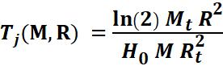
Tempo Jocaxiano em termos da constante de Hubble,
Distância e Massa
O Fator
Jocaxiano original (E9)[01]
torna-se:
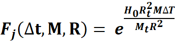 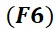
Fator
Jocaxiano em função da Massa da galáxia e Distância da estrela
O Valor
da Constante de Hubble H0
depende do campo gravitacional Local. Então, podemos isolar em F6 todas as
constantes que dependam da nossa via Láctea numa única constante J0 (). E assim definiremos a
“Constante de Jocax”
como:
= 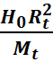
Definição da Constante
de Jocax(≈ 1×10−18m2⋅s−1⋅kg−1)
Onde:
H0
= Constante de Hubble (2,27E−18 s−1 )
Rt = Distancia do Sol
ao centro da Via-Láctea (2E20 m )
Mt =
Massa da Via Láctea (sem Matéria Escura) (2E41 kg )
O fator
Jocaxiano poderá ser escrito em termos de J0:
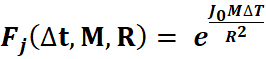 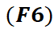
Fator
Jocaxiano em função da constante de Jocax
Agora
podemos calcular a medida (ou comprimento) realizada por um observador em
contração, em função da massa e distância da estrela que ele se encontra a qualquer galáxia:
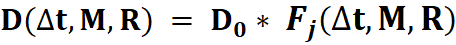
ou
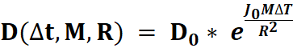
( Distance formula for any galaxy )
Onde:
D = Distância ou medida depois da
contração por ∆t
D0
= Distância ou medida Inicial
J0 =
Constante de Jocax (≈
1×10-18m2·s-1·kg-1)
M =
Massa da Galáxia
R = Distância da estrela ao centro
da galáxia
∆t = t
– t0 , Intervalo de Tempo de contração da galáxia
Como
vimos no artigo anterior, é bom termos em mente que o fator jocaxiano
Fj
serve para duas medidas :
a) Serve
para medir o quanto um objeto parece aumentar de tamanho (ou sua distância)
devido à contração do observador (multiplicando o tamanho por Fj )
b) Serve também
para calcular a
contração de algo (como o comprimento de onda) em relação a um
observador que não sofre contração (dividindo este tamanho pelo fator Fj).
2.2-O Caminho do Fóton
Para
entender o que acontece com o Fóton até chegar na Terra, devemos considerar que :
a) Tanto a
galáxia origem do fóton, quanto a via-Láctea estão em
contração desde a sua formação. Iremos considerar que ambas iniciaram a
contração no mesmo instante T0 . (Tomaremos
T0 como à época de formação da galáxia até o presente dia: cerca de
13 bilhões de anos (=4E16 s).
b) A taxa
de contração, como vimos, depende da massa da galáxia e
portanto podem ter taxas de contração diferente. O Fator Jocaxiano irá ponderar estas diferenças.
c) É
importante notar, como vimos anteriormente, que a taxa de contração da estrela que
emite o fóton depende da sua distância (R) ao centro da galáxia. Assim, o redshift do fóton de saída vai ser tanto maior quanto mais
afastada a estrela está de sua origem.
d) Claro
que parte do redshift será devido a rotação da
estrela, que é tanto maior quanto mais perto do centro estiver a estrela.
e) Esta
diferença do redshift de saída (Z1), em
função da distância ao centro da galáxia (R1), irá definir o “efeito
matéria escura” e sua curva peculiar.
f)
Consideremos que T1 é o instante que o fóton
é emitido da galáxia origem em direção à Terra. Quando ele parte da galáxia origem
ele deixa de sofrer contração, pois o campo gravitacional da galáxia torna-se
desprezível.
g) Iremos
calcular a velocidade aparente da estrela (em função da sua distância ao
centro) considerando o redshift até o momento de sua saída da galáxia. (Não
consideraremos o efeito “energia escura” que é a contração de nossa galáxia depois que o fóton parta da galáxia
emissora).
2.3- Vamos aos Cálculos
Para
simplificar vamos supor que as galáxias se formaram na mesma época. Neste caso
os fótons começaram a se contrair de forma diferente para cada galáxia com
massas diferentes.
O redshift é a variação do comprimento de onda em relação a
um padrão da Terra.
Inicialmente,
logo após a sua formação, ambas as galáxias (emissora (Messier_33, de massa
menor) e a receptora (Via-láctea, de massa maior)
emitiam fótons no mesmo comprimento de onda λ0.
Após cerca de 13 bilhões de anos (T0) as taxas de contração foram
diferentes e, portanto, o comprimento de onda diminuiu de forma diferente para
ambas galáxias.
Na Via
Láctea o fóton depois de T0 terá um comprimento de onda menor:
λT0 = λ0/FTJ(T0) = λ0/exp(H0T0)
Na
Messier_33 a taxa de contração é diferente, e devemos usar o Fj geral:
λM0 = λ0/Fj(T0,M,R)
Contudo
a estrela da Messier_33 que emite o fóton apresentará um redshift
que depende da sua velocidade de rotação:
V = cz
Onde c
= velocidade da luz
e z = redshift
Mas V =
SQRT(MG/R)
z = V/c = (λM1 / λM0 - 1 )
λM1 = λM0
( SQRT(MG/R)/c + 1 )
O redshift final em
relação à via Láctea será:
Zf = (λM1
- λT0
)/ λT0
Ou
:
Zf = λM1
/ λT0 -1
Que ficará :
Zf = (λM0 ( SQRT(MG/R)/c + 1 ) )/ λT0 -1
Zf = ((λ0/Fj(T0,M,R) )( SQRT(MG/R)/c + 1 ) )/ λ0/exp(H0T0) -1
Zf = ( (λ0/Fj(T0,M,R) ) (SQRT(MG/R)/c + 1) )/ λ0/exp(H0T0) -1
Zf = (exp(H0T0)/ Fj(T0,M,R) ) (SQRT(MG/R)/c + 1) -1
Mas v = cz , então a velocidade
medida na Terra ( sem considerar o efeito da “energia escura”= Nossa contração durante o percurso do fóton ), será:
V = c { (exp(H0T0)/ Fj(T0,M,R) ) (SQRT(MG/R)/c + 1) -1 }
Substituindo
Fj(T0,M,R) teremos finalmente
a curva de rotação da galáxia:
Vt=c ( 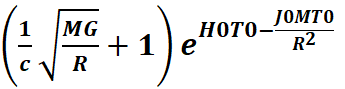
Curva
de Rotação da Galáxia (Velocidade aparente)
Onde:
C = Velocidade da Luz ( 3E8
m/s )
M = Massa da Galáxia Emissora ( 8E39 Kg )
G = Constante Gravitacional (
6,7E-11 )
R = Distância da Estrela ao centro da galáxia
H0 = Constante
de Hubble (2,2E-18)
T0 = Tempo de Contração (13
bilhões de anos=4E16s)
J0 = Constante de Jocax ( 1E-18 )
2.4-Para a galáxia Messier_33
Substituindo
os valores constantes para a galáxia Messier_33 teremos:
Vt=3E5 ( 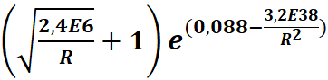
Velocidade
em Km/s em função da distância para a Galáxia Messier_33
Finalmente
teremos a Curva de Rotação para a Galaxia Messier_33:
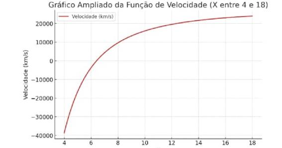
X=Distância
em mil anos Luz
Conclusion
The Decreasing Universe model provides a unified
explanation for both:
- The apparent acceleration of the universe's
expansion (without dark energy).
- The anomalous galactic rotation curves (without dark
matter).
By reconsidering the role of gravitational
contraction, this theory offers a new perspective on cosmology—one that
challenges the need for undetected exotic components in the universe.
References
[01] Derivation of Hubble’s Law and its relation to
dark energy and dark matter
https://medcraveonline.com/OAJMTP/OAJMTP-02-00049.pdf
[02]Decreasing universe: the
distance as a function of redshift
https://medcraveonline.com/AAOAJ/decreasing-universe-the-distance-as-a-function-of-redshift.html
[03]Decreasing Universe:
Redshifts and Distance Data Refute the L-CDM Model
https://www.wecmelive.com/open-access/decreasing-universe-redshifts-and-distance-data-refute-the-lcdm-model.pdf
[04] Rotation
curve of spiral galaxy Messier 33
https://pt.m.wikipedia.org/wiki/Ficheiro:Rotation_curve_of_spiral_galaxy_Messier_33_(Triangulum).png
.png){kind=link}
[05] GALAXIES GROW HOTTER AS THEY
AGE
https://hub.jhu.edu/2020/11/10/galaxies-get-hotter-as-they-age
[06] Decreasing Universe Theory: The Tully-Fisher Relation
https://philarchive.org/rec/BARDUT-3
[07] Decreasing universe: the CMB and the
age of the universe
http://medcraveonline.com/PAIJ/PAIJ-09-00372.pdf
[08] Decreasing Universe Theory:
Galaxies without Dark Matter (NGC 1052-DF2, DF4, and
DF9)
https://jocaxx.github.io/DUniverse/Todos/DUT_NGC1052_ENG.pdf
[09] Decreasing Universe: AI Analysis
of Article Data Disproves L-CDM Model
https://philpapers.org/rec/BARDUT-2
[10] What if the Universe Is NOT Expanding?
https://insertphilosophyhere.com/what-if-the-universe-is-not-expanding/
[11] The instability of critical and underdense
Friedmann spacetimes at the Big Bang as an alternative to dark energy
https://royalsocietypublishing.org/rspa/article/482/2338/20250912/481920/The-instability-of-critical-and-underdense
[12] Dark energy 'doesn't
exist' so can't be pushing
'lumpy' universe apart, physicists say
https://phys.org/news/2024-12-dark-energy-doesnt-lumpy-universe.html
[13]Decreasing Universe Theory: Main Articles
https://jocaxx.github.io/DUniverse/Articles.pdf